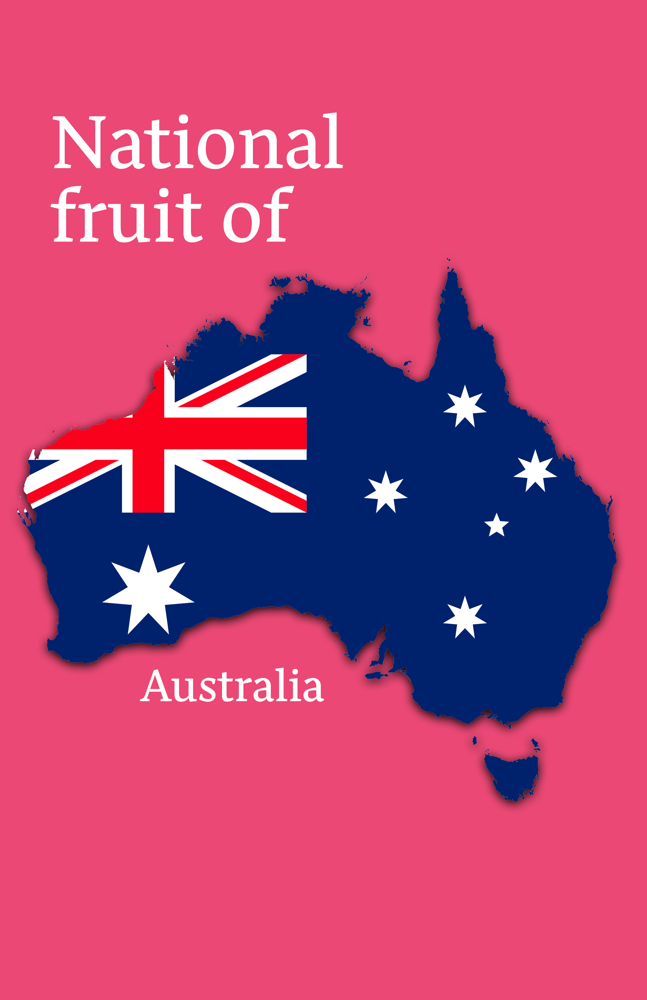
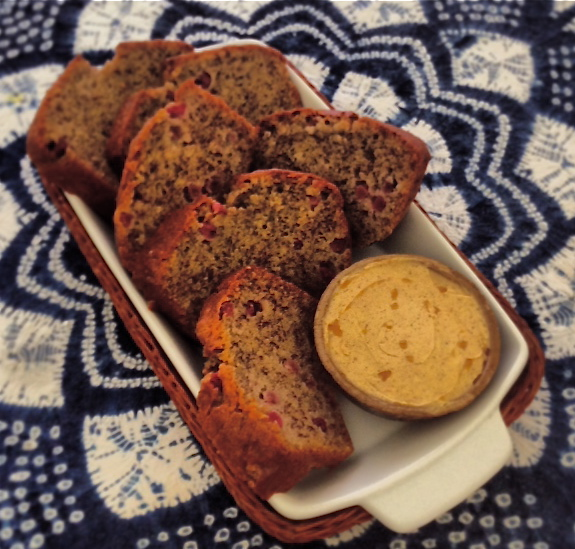
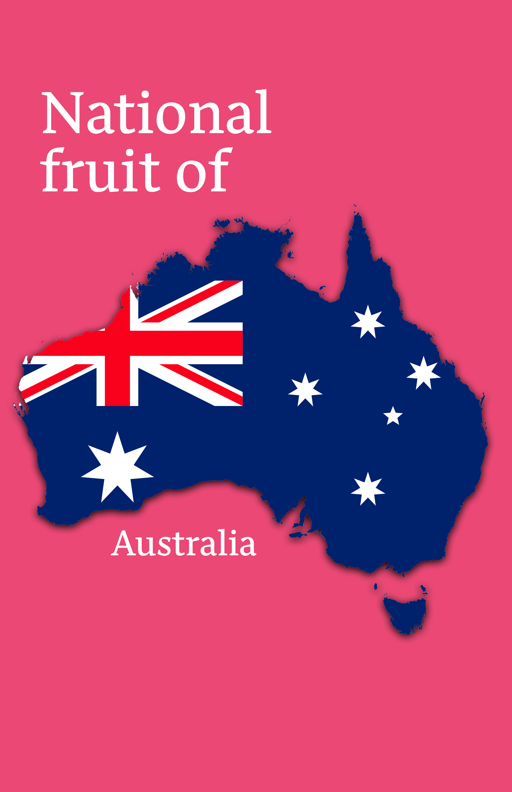
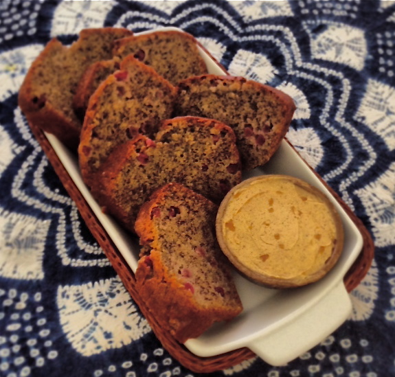

The
Riberry
Riberry, also known as Lilly Pilly or Syzygium Luehmannii, is a small fruit
that
is native to Australia. The fruit has a round shape and ranges in colour
from
pink to red to purple. Riberry has a tart and slightly sweet flavor, with
a texture
similar to a grape. It is often used in jams, sauces, and beverages,
and is a
popular ingredient in Australian cuisine. Riberry is high in antioxidants,
vitamin C,
and other essential nutrients, and is known for its potential health
benefits, such
as improving digestion and supporting immune function. The fruit
is also used in
traditional medicine for its antibacterial and anti-inflammatory
properties.
Riberry Bread
Recipe
(click image)
 


